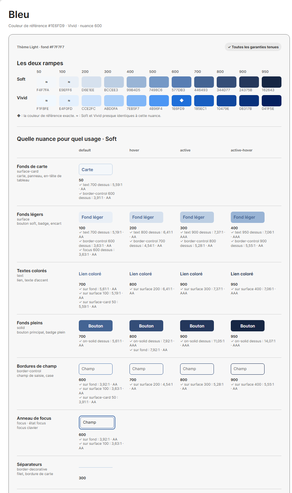

La planche de la palette Bleu, thème Light, texte des boutons blanc. À gauche, la planche actuelle, rendue depuis son modèle (planche/modele.ts) avec les mêmes tailles, espacements et couleurs que dans Figma : la partie Soft, la partie Vivid suit, identique. À droite, la planche proposée, montrée pour Vivid ; Soft a la même forme. Les rampes et les grilles de contrastes ne changent pas.

solid, surface et page, dans l'ordre de l'aperçu. Chaque ligne se lit comme une bande de l'aperçu : le dossier, son rôle, ses exemples d'usage.default, hover, pressed. La colonne active-hover disparaît, active devient pressed. La planche gagne une colonne de 128 px de marge.theme. Sous le spécimen : solid/default · 700, au lieu du seul numéro. Le designer retrouve dans Figma le nom qu'il posera sur ses calques.surface portent le texte et le contour de leur dossier, ceux de solid le texte des boutons.page n'a pas d'états : sa ligne montre ses quatre variables côte à côte, le texte coloré, le contour, l'anneau de focus et le filet, sous les colonnes d'états.